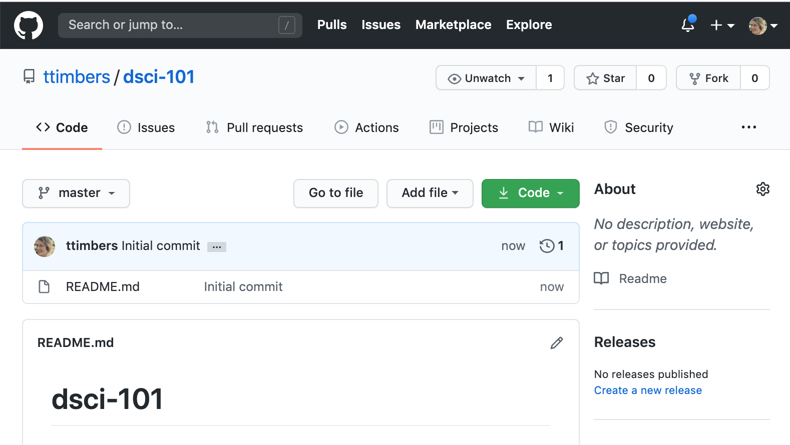
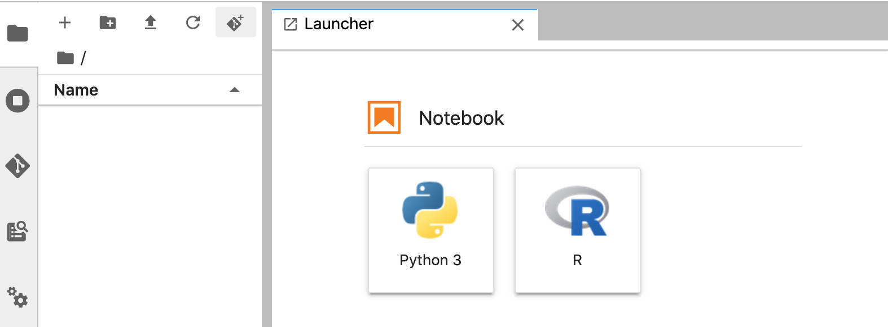
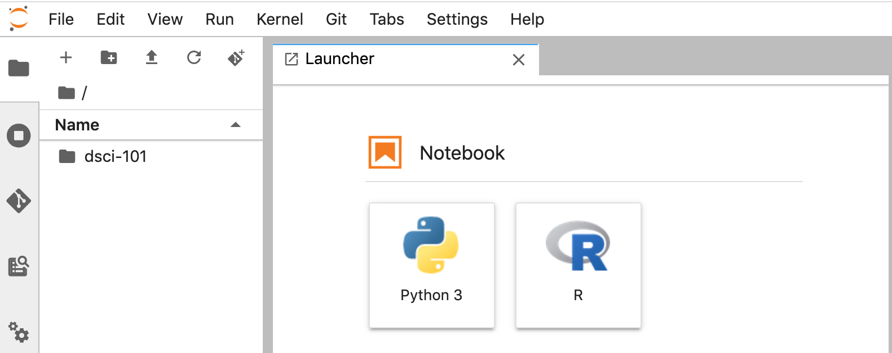
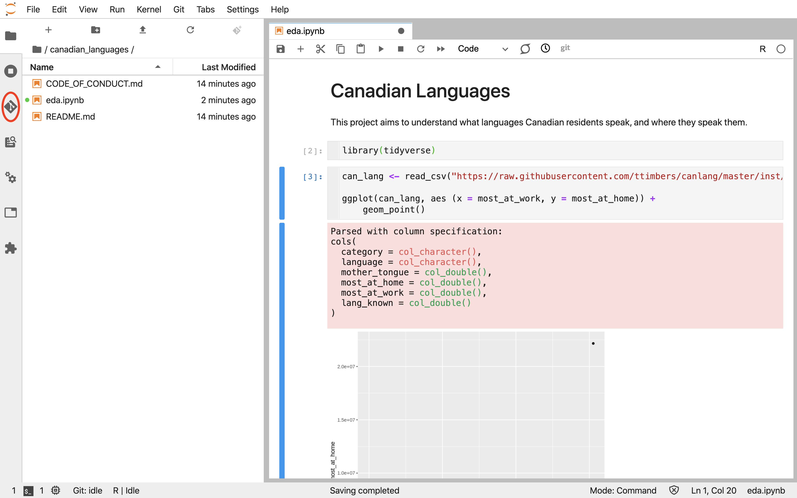
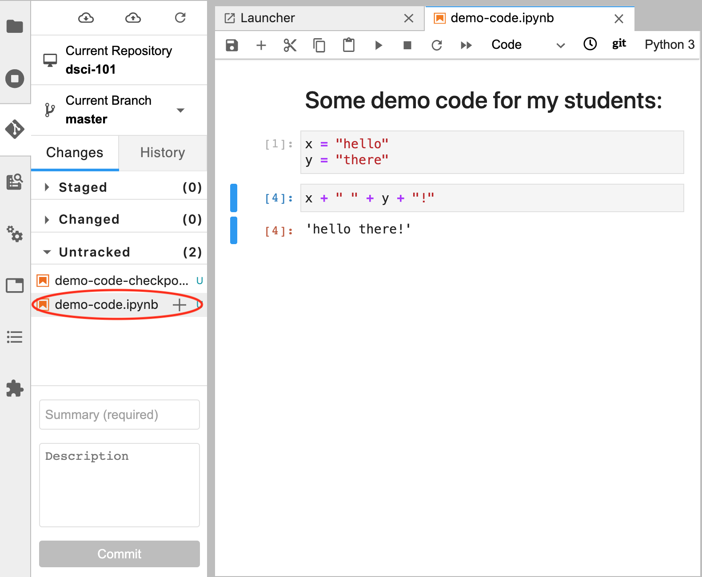
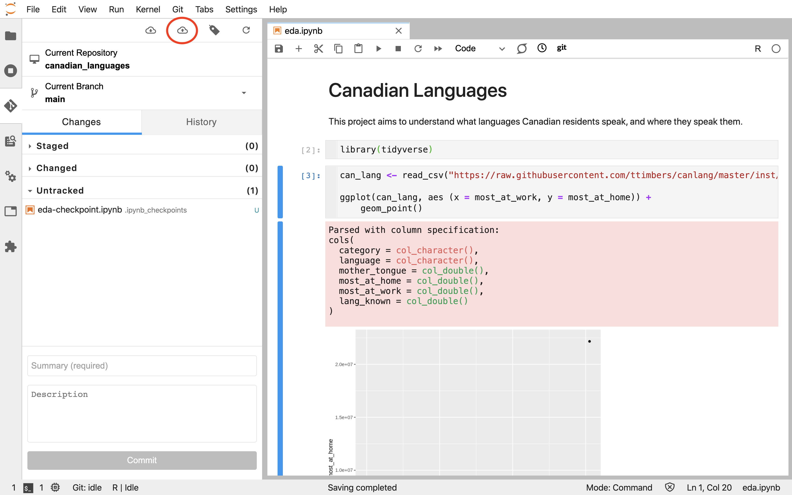
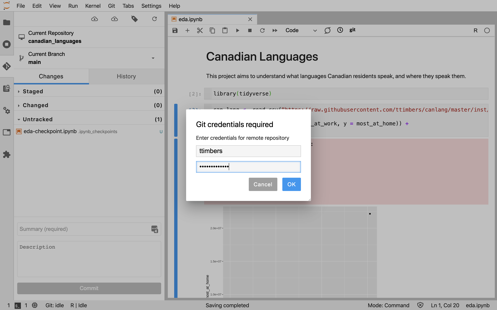
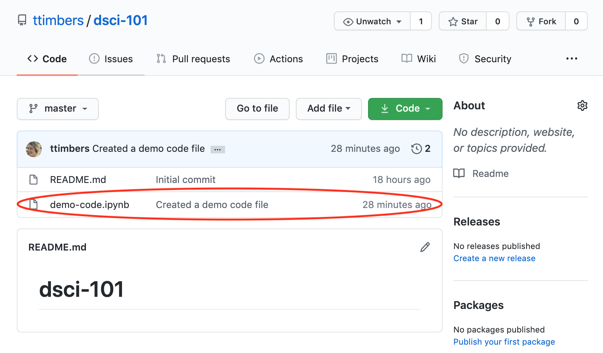
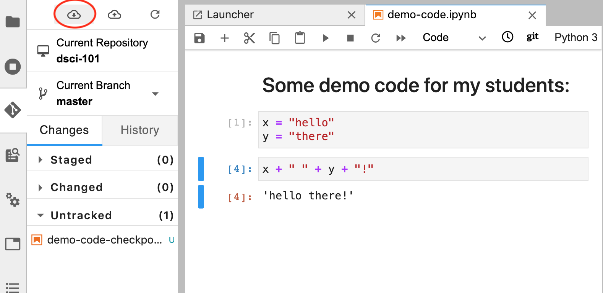

Chapter 5 Using Version control for collaboration
5.1 Overview
TBD
5.2 Chapter learning objectives
By the end of the chapter, students will be able to:
- Describe what version control is and why data analysis projects can benefit from using it
- Create a remote version control repository on GitHub.com
- Move changes to files from GitHub to JupyterHub, and from JupyterHub to GitHub
- Use best practices for collaboration when using version control to collaborate on a project with others
5.3 What is version control and why should I use it?
Good data analysis projects require iteration and revision to move from project ideation, through proof-of-concept to a finished product that is ready to be communicated to the intended audience. Without deliberate and conscious effort towards tracking which version of the analysis code led to which version of the results, data analysis projects can quickly and easily become messy, and the results irreproducible. Additionally, the iterative nature of data analysis projects means that there are usually several times in a project where one would like to go back to an earlier version of a code file, or back in time to an earlier state of the project to experiment or test things. Finally, data analysis projects are rarely completed by a single person alone, and instead teams of people typically collaborate. This means that files need to be shared across multiple computers, and multiple people usually end up editing a single file. In such a situation, determining which version of that file is the latest and most up to date can be a challenge - especially when two people are working on the same file at once!
Version control helps solve these challenges in analysis projects, particularly those that involve code, by tracking changes to code and data over the lifespan of a project (including when the changes were made and who made them). Version control also provides means to retreive earlier versions of a file (or files), or even go back in time to earlier states of the project. Finally, it also facilitates the merging changes from different collaborators working on the project - even when they are working on the same file (Wilson et al. 2014)!
You might find yourself saying, but I am not collaborating, so I don’t need to use or learn version control. However, as this popular data science quote aptly points out, future you often has to collaborate with past you.
You mostly collaborate with yourself, and me-from-two-months-ago never responds to email
– Mark T. Holder
5.4 Creating a space to share your code online
A repository on GitHub.com can used to host and share your analysis code and reports with your collaborators, as well as your project’s intended audience.
Before you can create repositories, you will need a GitHub.com account. You can sign up for a free account here: https://github.com/
To create new repository to host your project, Login to GitHub.com and click on the “+” icon in the upper right hand corner, and then click on “New Repository” as shown below:

On the next page, do the following:
-
enter the name for the repository (here we put
dsci-101) - Select “Public”
- Select “Initialize this repository with a README”
- click on the green “Create Repository” button

Now you should have a repository that looks something like this:

5.5 Moving changes from GitHub to JupyterHub
Although there are several ways to create and edit files on GitHub.com they are not quite powerful enough for efficiently creating and editing complex files, or files that need to be executed to assess whether they work (e.g., files containing code). Thus, it is useful to be able to connect the course repository that was created on GitHub.com to a coding environment. This can be done on your local computer, or using a JupyterHub. Given that we use a JupyterHub with this course, we will here show how to do this using a JupyterHub.
We will be using a Jupyter lab git extension tool to clone our GitHub.com course repository to the UBC JupyterHub. There are other ways to do this (e.g., use the Git command line tools in the terminal on JupyterHub), however we think this is the most user friendly way to introduce this.
On the file browser tab, click the Git+ icon:

Paste the url of the GitHub.com course repository you created and click the blue “CLONE” button:

On the file browser tab, you will now see a folder for your course repository (and inside it will be all the files that existed on GitHub.com):

5.6 Sending changes you make on JupyterHub back to GitHub
Once you make changes (e.g., create or edit files) in your course repository on JupyterHub, you will need to send them back to the course repository on GitHub.com to be able to share these with your students. We can use the Jupyter lab git extension tool to do this. It is a three stage process which includes:
- a
git addcommand to flag which modified files you want to send back to the course repository on GitHub.com - a
git commitcommand that logs the changes and an associated (useful) message about what was changed - a
git pushcommand that sends the added and committed changes to the course repository on GitHub.com
Below we walkthrough how you can use the Jupyter lab git extension tool to do each of the steps outlined above.
5.6.1 git add the modified files
Below we created and saved a new file (named demo-code.ipynb) that we would
like to send back to the course repository on GitHub.com.
To git add this modified file, we click the Jupyter lab git extension icon on
the far left-hand side of Jupyter lab:

This opens the Git graphical user interface (GUI) pane, and then we click the
plus sign beside the file that we want to git add. Note, because this is the
first change for this file that we want to add, it lives under the “Untracked”
heading. However, next time we edit this file and want to add the changes we
made, we will find it under the “Changed” heading.
Note: we can ignore the
demo-code-checkpoint.ipynbfile (sometimes called.ipynb_checkpoints), as it can be thought of as another type of “back-up” of our Jupyter notebook file we created, and we only need to send the file we directly created and edited to GitHub.com.

This moves the file from the “Untracked” heading to the “Staged” heading and we
are ready to now git commit the changes to log them and associate a (useful)
message about what was changed.

###git commit the changes and an associated (useful) message about what was changed
To git commit the changes and an associated (useful) message about what was
changed, we put our message in the text box at the bottom of the Git GUI pane
and click on the blue “Commit” button. Note: It is highly recommended to make
this message useful and relevant to the changes that were made, as this can
later be used to peruse the file history and understand how the file evolved.

After commiting the file, you will see there there are 0 “Staged” files and we are now ready to push our changes (and the attached commit message) to our course repository on GitHub.com:

5.6.1.1 3. git push the changes to the course repository on GitHub.com
To send our added and committed the changes to the course repository on
GitHub.com, we need to git push. To do this we click on
the cloud icon with the up arrow on the Git GUI pane:

We will then be prompted to enter our GitHub.com username and password, and click the blue “OK” button:

If the files were successfully pushed to our course repository on GitHub.com we will be given the success message shown below. Note: click “Dismiss” to continue working in Jupyter.

If you now go to the course repository on GitHub.com you will see the changes now exist there!

5.7 Strategies for collaboration when using version control
5.7.1 Pulling changes made in our course repository on GitHub.com to JupyterHub
If you make changes in your course repository on
GitHub.com using one of the tools described earlier in
this session (e.g., the pen tool, or file create/upload menus) then you will
need to git pull those changes to the copy of the course repository on
JupyterHub to get things in sync. You can do this using the Git GUI pane by
clicking on the cloud icon with the down arrow:

5.7.2 Handling merge conflicts
TBD
References
Wilson, Greg, Dhavide A Aruliah, C Titus Brown, Neil P Chue Hong, Matt Davis, Richard T Guy, Steven HD Haddock, et al. 2014. “Best Practices for Scientific Computing.” PLoS Biol 12 (1): e1001745.